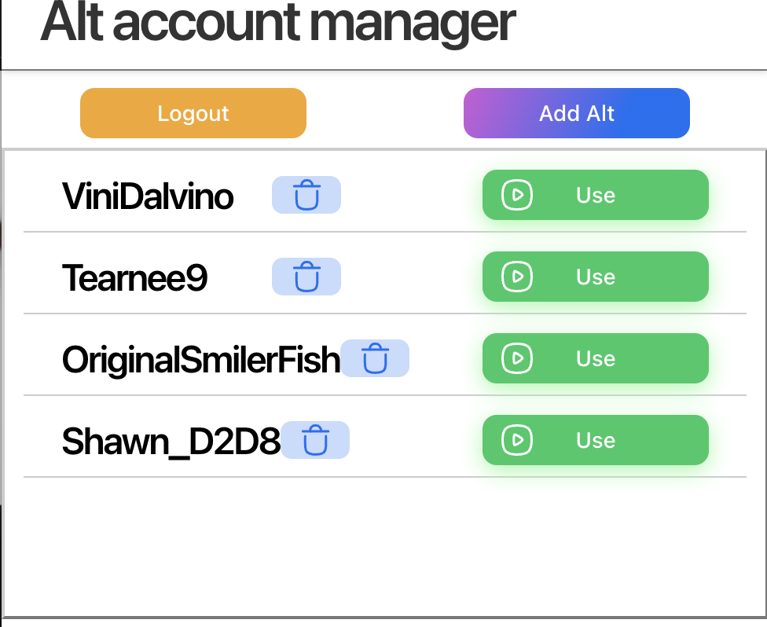
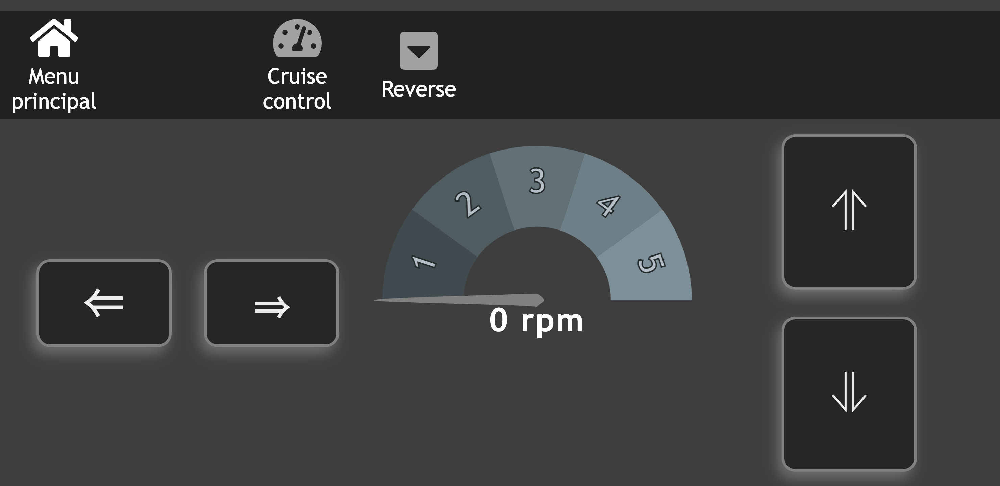

Roblox Alt Account Manager
Ce projet est une extension chrome qui permet de gérer plusieurs comptes alternatif sur roblox. Il a été fait en TypeScript et utilise React. Vous pouvez la télécharger sur le chrome web store ici.

To Do
Ce projet est une application de smartphone qui permet de créer des listes de tâches. Il a été fait en TypeScript et utilise React Native.

Manette de tank téléguider
Ce projet est une application web qui sert a controller un tank. Il a été fait en TypeScript et utilise React.